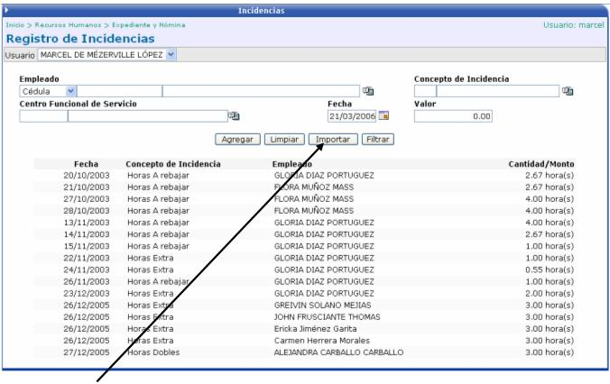
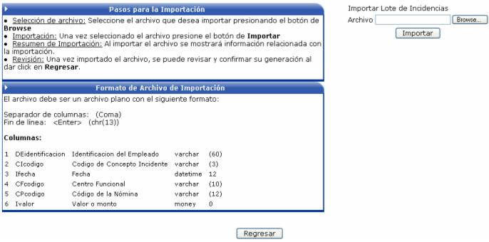
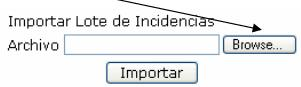
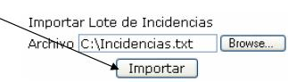
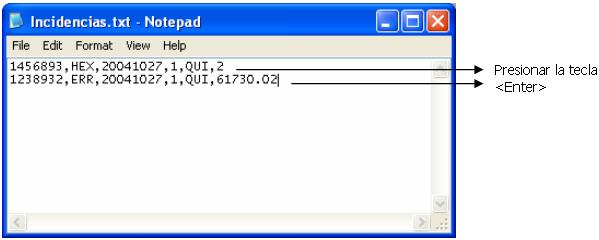

Las incidencias son aquellos movimientos que aumentan el salario de un empleado y que se dan con más frecuencia (de ahí el término incidencias). Se pueden dar en cualquier tipo de pago (semanal, bisemanal, quincenal, mensual) y en el cualquier orden. Por ejemplo en la primera quincena si, en la segunda no y en la tercera si; o en los dos primeros meses no y en el tercero si, etc.
Algunas de las incidencias son: las horas extras, redondeo, horas dobles, recargo de funciones, etc.
En esta pantalla se solicita cierta información como el empleado, el concepto de incidencia a aplicar, la fecha en que va a regir y el valor a aplicar. También se puede especificar el centro funcional de servicio, para que cuando se realicen los movimientos contables de la nómina, saber cual es la cuenta que se va a ver afectada.

El botón  sirve para que
el usuario cargue masivamente incidencias, desde un archivo de texto.
sirve para que
el usuario cargue masivamente incidencias, desde un archivo de texto.

Las instrucciones a seguir y el formato que tiene que tener el archivo de texto, se describen a continuación:
Pasos para la importación:
Selección de Archivo: seleccione el archivo que desea cargar presionando el botón “Browse”

Importación: una vez seleccionado el archivo presione el botón de ”Importar”

Resumen de Importación: al importar el archivo se mostrará información relacionada con la importación.
Revisión: una vez importado el archivo puede revisar la importación desde la lista de lotes de Incidencias.
Formato del Archivo de Importación:
El archivo debe ser un archivo plano y debe de tener las siguientes columnas:
1. Identificación del empleado
2. Código del Concepto de Incidencia
3. Fecha de la incidencia, con el formato yyyymmdd
4. Centro Funcional
5. Código de la Nómina
6. Valor o monto
Para separar las columnas se debe de utilizar una coma (,) y para el fin de línea se debe de presionar la tecla <Enter>
Un ejemplo del archivo a importar es el siguiente:
